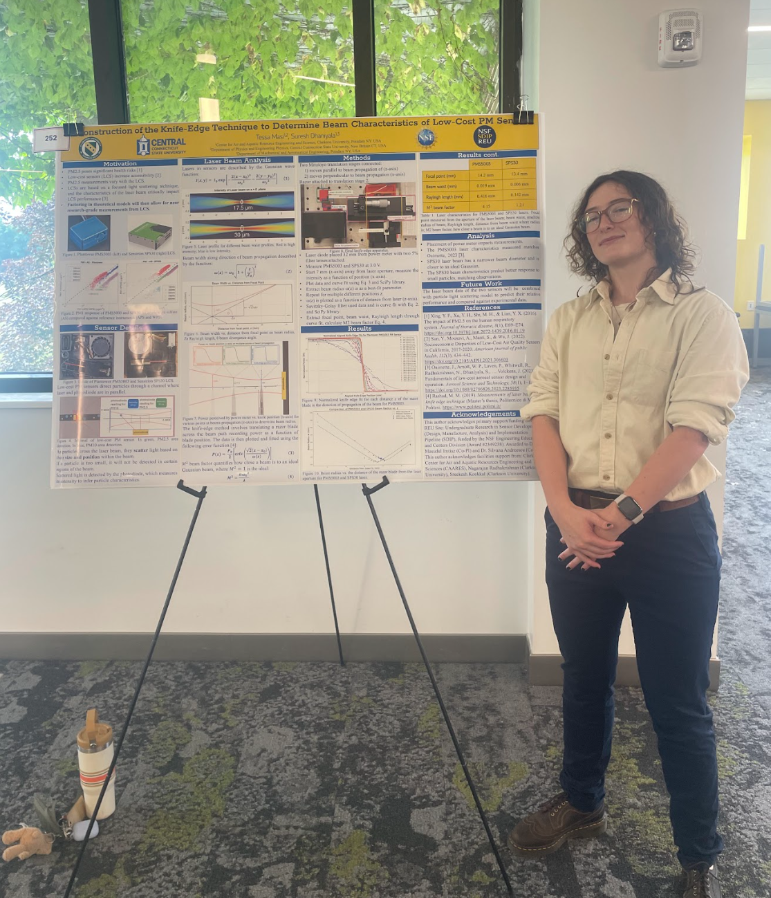

SDIP REU
PI: Dr. Suresh Dhaniyala
Project Title: Reconstruction of the Knife-Edge Technique to Determine the Beam Waist of the PMS5003 Laser Scanner
Authors: Tessa Masi, Suresh Dhaniyala
Abstract: Particulate matter (PM) of sizes smaller than 2.5 μm (PM2.5) pose significant health risks when inhaled.
Those in socioeconomically disadvantaged communities are most vulnerable to PM2.5 exposure. Cost-effective PM sensors,
such as the PMS5003, increase accessibility, enabling individuals in underprivileged communities to monitor their health.
Critical to the quality of measurements made by these sensors is the characteristics of the laser beam in these units.
In this study, we are developing a low-cost technique to measure the beam waist of the laser used in two low-cost PM sensors -
PMS5003 and SPS30 - by reconstructing the knife-edge technique. Commercial systems for beam profiling, such as Thorlabs scanning-slit
profilers, are incredibly expensive, creating a need for accessible alternatives in both academic and applied research settings.
Accurate characterization of laser beam properties is essential for understanding how these PM sensors detect and size airborne particles,
and is therefore crucial for determining their suitability in cleanroom monitoring and other high-sensitivity environments.
It is hypothesized that the lasers in the PM sensors emit a near-Gaussian beam with a beam waist located close to the laser aperture.
To evaluate this, a custom beam profiling setup is constructed using multiple micrometer translation stages, a single-edge razor blade,
and a power meter. The knife-edge method involves translating the razor blade across the laser beam path while recording transmitted power
with a photodiode as a function of blade position. This data is fit to an error function to extract the 1/e² beam radius at multiple distances
from the laser. By mapping the beam radius as a function of axial distance, key beam parameters, such as the beam waist, Rayleigh range, and M²
beam quality factor, will be determined. This affordable profiling method will be validated against published laser characteristics data of
PMS5003. The laser beam data of the two sensors will be combined with a particle light scattering model to predict their relative performance
and compared against experimental data.
View OneNote Project
Presentation Video:
https://youtu.be/epHPmjDKK0U?feature=shared
